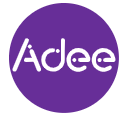

😕 Accessibility in practice#
Accessibility guidelines: WCAG#
But how exactly do we decide if a website is accessible or not? The WCAG 2.1 provides the most widely used accessibility guidelines. A crucial part of understanding web accessibility is broadly understanding the WCAG. WCAG stands for Web Content Accessibility Guidelines and are developed by the Web Accessibility Initiative (WAI). WAI is part of the World Wide Web Consortium (W3C) which provides universal standards for the web.
Each guideline from WCAG has criteria that can be tested to determine whether a web design meets the guideline or not. For example, the Success Criterion 1.4.1 Use of Color is achieved if “Color is not used as the only visual means of conveying information, indicating an action, prompting a response, or distinguishing a visual element”. While meeting the WCAG criteria will prevent the vast majority of accessibility issues, the WCAG is not completely comprehensive. Rather, it provides a minimum for designers to meet and exceed and also provides many accessibility principles that can be applied across situations.
There are different levels of the WCAG. Read the following excerpt from the WAI:
There are three levels of conformance [to the WCAG]:
Level A is the minimum level.
Level AA includes all Level A and AA requirements. Many organizations strive to meet Level AA.
Level AAA includes all Level A, AA, and AAA requirements.
It is generally good to aim for level AA and even better to aim for level AAA.
Which of the below is the most widely used and accepted set of accessibility guidelines?
Current design practices#
Despite the availability of guidelines and resources on accessibility, accessibility is not prioritised highly enough in practice. In fact, of the top one million home pages, 96.3% had WCAG failures [1]. One of the key reasons for this is that accessibility is not incorporated early enough into the web design process. Deadlines and a lack of resources mean that accessibility is often only lightly considered at the end of the process or not considered at all. By incorporating accessibility from the very beginning of web design:
the needs of people with disabilities are continually considered,
it is less costly to fix accessibility problems, and
better accessibility is good for everyone.
So what exactly is involved in the early stages of web design? Web designers create a draft version of the website that is not fully functional, called a prototype. They use design tools such as Figma, which is the tool that you will use shortly.
Designs are then sent on to developers who write the actual code for the website based on the designs.
Which of the below statements is NOT true about web design?
Accessible design tools like Adee#
{kind=link}
Accessibility experts recommend that accessibility support is incorporated into the tools that web designers use daily. There are many requirements for designers to consider while designing including the design brief itself, aesthetics, company branding, marketing requirements, and many more. And accessibility is another crucial requirement to juggle. However, having in-built accessibility support in design tools helps with this. It helps designers to easily integrate accessibility and have access to feedback and resources without having to leave the tool and manually check WCAG requirements. One such accessibility tool is Adee which you will also use shortly.
How well do you understand accessibility in design practice?